セーブを可能にする方法
1.C:\jdk1.3\bin フォルダーの中にあるpolicytool.exeを実行します。(JavaのバージョンによってはフォルダーがC:\jdk1.2.2\binのようになります。)
（エクスプローラーでJavaのフォルダーにいきダブルクリックで起動します。）
Dos画面が表示された後、最初は下の表示がでると思います。
これは今から設定しようとするファイルがないことを表しています。
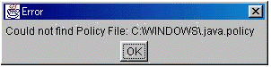
2.[OK]をクリックします。
そうすると下のようになります。
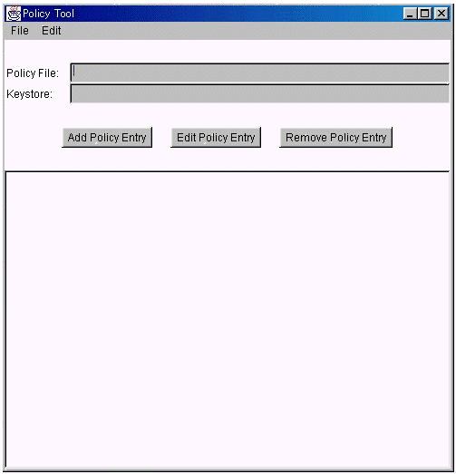
3.メニューのFileをクリックします。
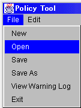
4.Openを選択します。
ファイル選択ダイアログが開きますので、Windowsフォルダを選択します。ファイルの場所は最初Javaフォルダーからスタートします。選択の仕方がわからない人はファイルの場所の四角形のどこかをクリックすると、どこかにC:\と表示されます。そこをクリックした後それからWindowsフォルダーを選択しましょう。下の図はWindowsフォルダを選択したところですが、表示している様子は各マシンによって異なります。
5.ファイル名を .java.policy
として[開く]をクリックします。
(注意．ファイル名はピリオド、小文字のjava、ピリオド、小文字のpolicyです。)
もう一度繰り返しますがファイル名はピリオドから始まります。
ファイル名を入力しおわったら、[開く]をクリックします。
以下のダイアログボックスが表示されます。
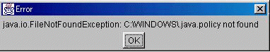
これは現在作ろうとしているファイルがないというメッセージです。今はファイル名だけを指定しましたから当然です。
無視して進みましょう。
[OK]をクリックします。
図のような状態になります。
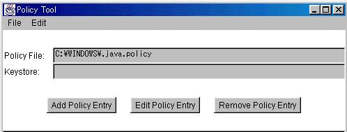
6.[Add Policy Entry] のボタンをクリックします。
そうすると以下のような Policy Entry のダイアログボックスが表示されます。
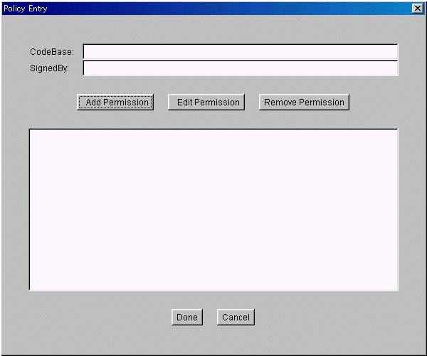
7.CodeBase欄に自分がインストールしたフォルダ名を入力します。
（例．file:/C:/Java/MagicTower/）
大文字小文字に注意してください。必ず先頭にはfile:/をつけてください。最後は必ず/で終わります。ここでのフォルダー区切り記号は\を使わずに/で区切ります。

8.ファイル名を入力し終わったら[Add Permission]をクリックします。以下のようになります。
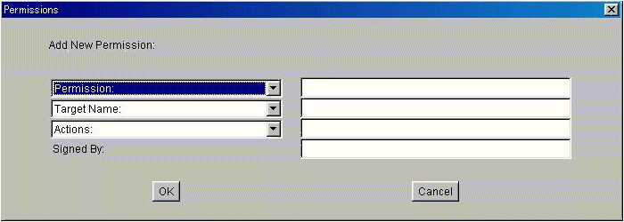
9.次にPermission:欄の右についているプルダウンメニューの▼をクリックします。
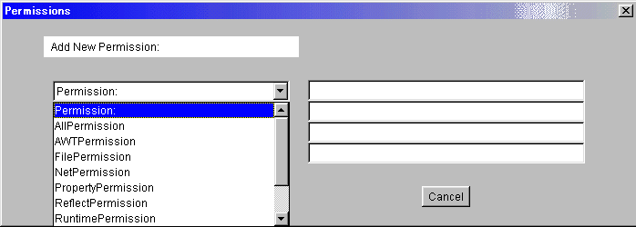
10.項目の中から４番目のFilePermissionを選択します。
11.同様にTarget Name: のプルダウンメニューから<<ALL
FILES>>
12.Actions:のプルダウンメニューからwriteを選択します。
以下の図を参考にしてください。
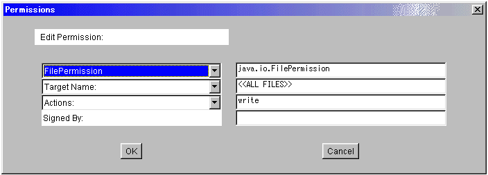
13.この通りに指定できたら[OK]をクリックします。以下の図のようにエントリー欄に表示されましたか？
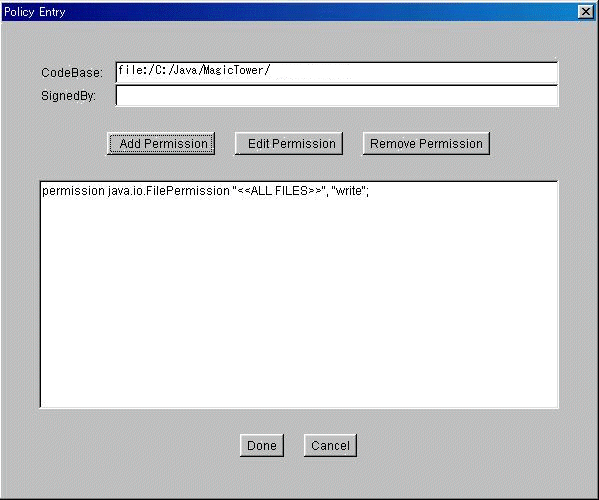
14.[Done]をクリックします。ここでも以下の図のようにエントリー欄に表示されましたか？
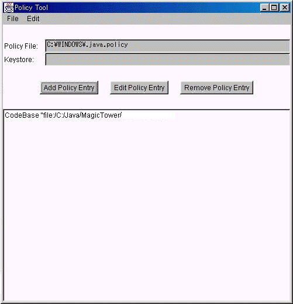
15.最後にメニューのFileからSaveを選択します。以下の図のようなメッセージが表示されれば設定終了です。
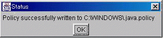
16.[OK]をクリックして、policytoolを終了します。(メニューのファイルから[EXIT]を選択する。)
17.Magic Towerを起動します。右クリックまたはアプリケーションキーのポップアップメニューの中にセーブがあります。ステータス行にSaved.と表示されたらOKです。なおこの書き込み設定は指定したフォルダーのファイルのみ書き込みできることを許可するものです。無制限に書き込むわけではありませんのでご安心ください。なおこのMagic
Towerは自分のフォルダーの下層フォルダーにセーブデータやランキングデータを書き込みします。よってインストールしたフォルダー名を勝手に変えますとセーブできなくなります。ではごゆっくりゲームを楽しんでください。(^^)/~
もし参考資料をほしい方は次のリンクを参考にして下さい。
(Solaris
用) (Windows
用)
付記.もしこのとおりにならなかった場合、または変に設定してしまった場合には、一度policytoolを終了し、エクスプローラーでWindowsフォルダーにいって、作った.java.policyのファイルを削除してからもう一度最初からやり直してください。できる限り質問には答えますが、自分はここに書いた以上のことはわからないのでがんばってください。(Oz
wrote Jan 18, 2001)